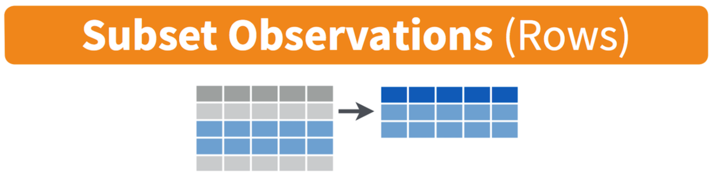
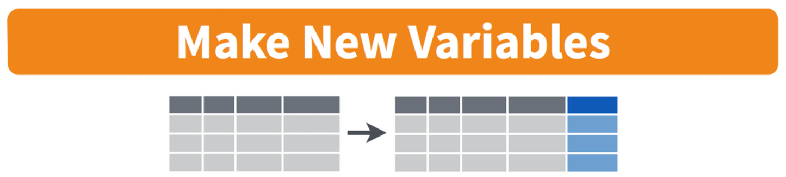

Jenny Wagner, PhD, MPH
Department of Public
Health
California State University, Sacramento
Lab 1 introduces you to the core functions of R/RStudio and covers essential data cleaning techniques. Data cleaning is a critical skill to have in carrying out public health research. It entails the preparation of raw - and often messy and unstructured - data for analysis. While the specific steps can vary by project, many common tasks — such as modifying variable types, filtering data, and creating new variables — are foundational to ensuring reliable and reproducible analyses.
Before you begin Lab 1, I recommend reading Chapter 2 (“The Very Basics”) of Hands-On Programming with R. This chapter provides an overview of the R language and its use within RStudio. Some of this information has already been covered on the Assignment Guidelines page; however, this optional reading will provide more detail if you need additional context.
After completing Lab 1, you will be able to:
When you are ready to start Lab 1:
.Rmd file in a folder
dedicated to Lab 1 materials.On the Assignment Guidelines page, you read through an example in
which R was used to add 1+1. R can be used in this way as a simple
calculator; however, most often we will use R functions (or “commands”)
to perform more complex analyses that would otherwise be extremely
burdensome to perform by hand. R functions allow you to perform tasks
such as data visualization, statistical modeling, or data cleaning,
without having to write all the code from scratch. For example, suppose
you want to know the mean (or average) of a set of numbers. Rather than
manually adding all of the values together and then dividing by the
number of values, we can simply use the mean() command in
R. These types of R functions do not exist in a vacuum but rather within
R “packages”, which are collections of pre-written functions, data, and
documentation that extend R’s capabilities far beyond a simple
calculator.
To use the functions contained within a particular package, that
package must be installed in R. You can install a package using the
install.packages() command. Once you have done this, the
package is saved on your computer, and you won’t need to install it
again unless you update or reinstall R.
In RStudio, we will work with many different packages over the course
of the semester. For now, start by installing the packages
knitr, rmarkdown, and
tidyverse by typing the following in your R
Console window (bottom-left) after >:
install.packages("knitr")
install.packages("rmarkdown")
install.packages("tidyverse")Remember that when we type code directly into the Console window,
that code is not saved for future use. This is exactly what we
want to do when installing packages for the first time. This is because,
as mentioned above, we only need to install a package once. However, to
use the functions from a package in a new R session, you must load the
package using the library() function. Loading a package
makes its functions available for use in your current R
session.
For example, to load the packages you installed a moment ago, create a chunk in your R Markdown document as follows:
After running this chunk, you will see a lot of “stuff” appear in the Console window. For our purposes we can ignore all of this when loading packages - that is, unless you see an error message, which would indicate the package did not load properly.
After loading an R package, you can explore its functions by
accessing the package documentation. One way to do this is to use the
help(package = "package_name") command. For example:
You should see some information about “tidyverse” appear in the Help window (bottom-right), including links to a description file, user guide, and other documentation.
In RStudio, the working directory is the default folder where R reads and saves files during your session. Think of it as the “home base” for your current project. When you import a dataset or save a file, R will look in this directory unless you specify otherwise. When starting an assignment, you will always need to specify your working directory. For example, for the current assignment (Lab 1), you will want to set your working directory as the folder where you have saved your Lab 1 R Markdown file and “frmgham2.csv” dataset.
You can set the working directory in a couple of ways:
Manually in RStudio: Go to the “Session” menu at the top of your screen, hover over “Set Working Directory”, and then click “Choose Directory…” to navigate to your desired folder.
Using Code (Recommended): Use the setwd() function to specify the path to your directory. For example:
setwd("YOUR FILE PATH HERE")You, of course, will need to insert your own file path between the quotation marks. Not sure how to copy your file path? Try Googling “how to copy file path on mac” (or on whatever operating system you are using).
I recommend using code so that your working directory for a particular assignment or project is documented in your R Markdown file. This will be helpful when restarting R or reopening an assignment because rather than searching through your files to set the working directory manually, you will just need to rerun the chunk that already contains the necessary file path.
To analyze data in RStudio, the first step is often to import a dataset into your working environment. R supports various file types, including CSV, Excel, and text files. The most common data file type you will encounter is a CSV (Comma-Separated Values) file.
For Lab 1, you should have already downloaded the dataset called “frmgham2.csv” and saved it in the same folder as your Lab 1 R Markdown file. You should have also already set this folder as your working directory.
To import a CSV file, use the read.csv() function,
specifying the name of your dataset within quotation marks as
follows:
Notice the line of code we used to bring in the dataset starts with
data <-. This is telling R that we want to save the
“frmgham2.csv” dataset as an “object” in our Environment and call it
“data”. An R object is a named data structure in R that stores
information, such as data, functions, or results, allowing you to reuse
and manipulate it throughout your analysis. In this case, we want to be
able to access and manipulate the data contained within the
“frmgham2.csv” data file. This is why, after running this chunk, you
should see an R object called “data” in your Environment window
(top-right). When performing your own analyses, you can call R objects
whatever makes the most sense to you. A couple of quick observations
about the “data” object now in our Environment:
In the Environment window, click on the “data” object you have
created. You can also type View(data) into the Console for
the same result. You should see the dataset open in a new tab within
RStudio. It should essentially look like a spreadsheet, with variable
names across the top and each observation in a row.
Note: For Excel files, you’ll need to install and load the
“readxl” package and use the read_excel() function instead
of read.csv().
We’ve loaded our dataset into RStudio and now we’re ready to analyze it, right? Not quite! Before you begin any kind of analysis (and really before you even start downloading any data), it is important to have a clear understanding of the dataset’s contents. This includes knowing what each variable represents, how the data were collected, and whether there are any limitations or nuances you need to account for. Without this understanding, you risk misinterpreting results or making errors in your analysis.
Data documentation, often called a codebook or data dictionary, is a resource that explains:
You will use data documentation at various stages of a project:
For several assignments in this course, we will be using the “frmgham2.csv” dataset you’ve loaded into your current R session. This dataset is from the Framingham Heart Study, which is a prospective cohort study carried out over several decades to study causes and risk factors for cardiovascular disease. Before moving forward, read over the first 7 pages of the data documentation, linked on the Lab 1 assignment page in Canvas.
Beginning on page 2 of the data documentation, you will see a table that defines each of the variables included in the dataset, including the variable name, a brief description, the units of the variable, and the range of values (or, instead, the count of observations, labeled with “n”). Take a moment to examine the dataset in RStudio in the context of this codebook. You should see that each column in the dataset has a corresponding row in the codebook that defines that variable.
Using the data documentation, answer the following questions:

One key benefit of working with a dataset in RStudio is that any data manipulation you perform — such as filtering rows, creating new variables, or transforming data — occurs within R and does not alter the original data file. This ensures the raw data remain unchanged, allowing you to experiment freely while maintaining the integrity of your original dataset.
For example, using the dataset you’ve loaded from the Framingham
Heart Study, suppose we want to restrict the data to the
baseline sample for some exploratory analysis. As you have
likely already observed, the original dataset contains multiple
observations (up to three) for each participant, where each of these
observations corresponds to a different period of time (specified by the
“PERIOD” variable). The baseline observation (where PERIOD = 1) is the
initial data collected when a participant entered the study. We can
restrict the data to the baseline sample using the filter()
command as follows:
First, understand that “filtering” data basically means that we are selecting certain rows based on condition. There are a few things happening in the above code chunk, so let’s break them down:
filter(PERIOD == 1): Applies the filter()
function to select rows where the variable PERIOD is equal to 1. Only
rows meeting this condition are included in the resulting dataset.data %>%: The %>% is called a “pipe
operator” and comes from the “tidyverse” package. There are always
multiple ways the same task can be accomplished in R, and this operator
is essentially used to help us write our code in a logical and efficient
way. Here, the pipe operator is used to pass the dataset we called
“data” as input to the next function. In other words, the pipe
operator (%>%) is like saying “and then.” It takes whatever is on the
left side — in this case, the dataset we called “data” — and hands it
over to the next step. So, you start with your data, and then
you tell R to filter it to only include rows where the PERIOD variable
is equal to 1. It’s like giving R a to-do list: ‘Start with this data
and then filter it for me.’ We will use the pipe operator a lot
throughout the course.data_period1 <-: Creates a new object called
“data_period1” to store the filtered dataset. The <-
operator is like an arrow - it assigns the result of the operation
(everything on the right of the arrow) to this new object. In other
words, we are taking our original dataset (called “data”), filtering it
to only include observations where PERIOD is equal to 1, and then saving
this filtered dataset as a new data object called “data_period1”. Giving
a new name to the resulting dataset is important because it allows us to
keep the original data unchanged while working with a modified version.
This way, the original data remains intact for reference or other
analyses, and the new name makes it clear what the filtered or modified
dataset represents. For example, naming the filtered dataset
“data_period1” helps us quickly identify that it contains only the rows
where PERIOD is equal to 1, making our work more organized and easier to
understand later.Once you run the code chunk above, you should see the new R object called “data_period1” in your Environment (top-right window). Notice that this object contains 4434 observations and 39 variables. Click on the “data_period1” object to view it in a new tab. You should see that all 39 variables in our original dataset have been retained. But, when you scroll over to the PERIOD variable, all of the observations show a value of 1.
We will continue to work with this modified dataset for the remainder of the assignment.
Identifying and modifying variable types in R is crucial because the type of a variable (e.g., numeric, character, factor) determines how R processes and analyzes the data. A variable may be most appropriately assigned one type—such as categorical—but R may initially interpret it differently, such as numeric, depending on how the data is formatted or imported. For example, a variable representing survey responses like “1 = Yes” and “2 = No” might be read as numeric, but treating it as a categorical (factor) variable is more appropriate for analysis. Ensuring variables have the correct type helps prevent errors, ensures accurate analyses, and allows you to use the right functions effectively. By explicitly modifying variable types when needed, you can make sure R treats your data correctly for your analysis.
For example purposes, let’s identify the variable type for a few of the variables in our dataset - specifically, sex, age, BMI (body mass index), and attained education. We will do this using the “class” function as follows:
## [1] "integer"## [1] "integer"## [1] "numeric"## [1] "integer"When we run the above code chunk, the results will appear in the
Console (bottom-left window). You should see that SEX is an
“integer” variable, AGE is an “integer” variable,
BMI is “numeric”, and educ (attained
education) is an “integer” variable. Integer and numeric variables both
represent numbers - the difference is that integer variables are
discrete (the values must be whole numbers) whereas numeric variables
can take on any value (including decimals). R interprets variables as
integer or numeric by default when importing data because it relies on
the format of the raw data and doesn’t automatically assign “context” or
“meaning” to the values. For example, R doesn’t know that for “SEX”, 1
means male and 2 means female. It only sees the values “1” and “2”.
Using what we have learned in class, let’s consider the most appropriate
variable type for each of these four variables:
Given the above explanations, we’ve can conclude that the AGE and BMI variables are already appropriately coded as “integer” and “numeric”, respectively. SEX and educ, on the other hand, would be more appropriately coded as factor (or “categorical”) variables given the values represent categories. As we learned in class, these factor variables can be further categorized into two types - ordered and unordered. For example, sex represents categories with no inherent order or ranking. In our dataset, sex can take on two values - 1 (male) or 2 (female). There is no logical sequence between these categories — they are distinct but equal. As such, “SEX” should be treated as an unordered factor variable in any analyses. Conversely, the values associated with attained education represent categories with a natural hierarchy or ranking (e.g., high school < some college < college). The levels have a logical progression, with one level ranked above or below another. As such, “educ” should be treated as an ordered factor variable in any analyses. Ordered factors are treated as ordinal variables in analyses, allowing you to consider their ranking in models or visualizations.
To ensure these variables are utilized and interpreted correctly in
our analyses, we need to convert the variables to their most appropriate
types. We can do this using the factor() command as
follows:
# convert sex to unordered factor variable
data_period1$SEX <- factor(data_period1$SEX,
levels=c("1", "2"),
ordered=FALSE)This code converts the SEX column of the data_period1 dataset into a categorical variable (factor), specifying that it has two levels (“1” and “2”) and that these levels are unordered. This ensures that R treats the variable as distinct categories, making it suitable for categorical analyses. Let’s break down the code one piece at a time:
data_period1$SEX <-: This part assigns the result of
the factor() function to the SEX column of the
data_period1 dataset. The <- symbol means
“assign this value to,” so we are updating the SEX column
with a new version where it is converted into a factor. The
$ operator here is used to access a specific column within
a dataset. The part before the $ identifies the dataset to
use (in this case, data_period1), and the part after the
$ specifies the column being modified (in this case,
SEX).factor(data_period1$SEX, ... ): The factor() function
is used to convert the SEX variable into a factor. Factors are used for
categorical data, allowing R to treat the variable as distinct
categories rather than as numeric values.data_period1$SEX: Refers to the SEX column in the
data_period1 dataset. This is the variable being transformed into a
factor.levels=c("1", "2"): Specifies the possible values (or
levels) for the factor. In this case, the levels are “1” and “2”, which
might correspond to categories like “Male” and “Female”. Defining levels
ensures R knows all valid categories for the factor.ordered=FALSE: Indicates that the factor is not
ordered—the levels do not have a natural hierarchy or ranking. For
example, “Male” and “Female” are categories with no logical order, so
ordered=FALSE is appropriate here.# convert attained education to ordered factor variable
data_period1$educ <- factor(data_period1$educ,
levels=c("1", "2", "3", "4"),
ordered = TRUE)This code converts the educ column in the
data_period1 dataset into an ordered factor with four
levels (“1”, “2”, “3”, “4”). The ordered=TRUE argument
tells R that the levels have a hierarchy, ensuring R interprets the
variable as ordinal, which is appropriate for analyses involving ranked
data, like educational attainment. Let’s break down the code one piece
at a time:
data_period1$educ <-: This assigns the result of the
factor() function to the educ column of the
data_period1 dataset. The <- symbol means “assign this
value to,” so we are updating the educ column with a new version where
it is converted into a factor.factor(... ): As we saw above for SEX, the
factor() function is used to convert the educ variable into
a factor.data_period1$educ: Refers to the educ column within the
data_period1 dataset. This is the variable being transformed into an
ordered factor.levels=c("1", "2", "3", "4"): Specifies the possible
values (or levels) for the factor. In this case, the levels are “1”,
“2”, “3”, and “4”. These correspond to the categories shown in the data
documentation. Defining levels explicitly ensures R knows the valid
categories and their sequence.ordered=TRUE: Indicates that the factor is ordered,
meaning the levels have a natural hierarchy or ranking. For example, “1”
(e.g., “0-11 years”) is considered lower than “4” (e.g., “College (BS,
BA) degree or more”), and R will treat this as an ordinal variable,
allowing for comparisons that account for this order.When we assign the modified variable back to the same name as the
original (e.g., data_period1$educ <-), R overwrites
the original variable with the new version. In both of our examples
here, the SEX and educ columns - originally
integer variables - are replaced with factor versions of the same
data.
This means the SEX and educ variables in
the data_period1 dataset will no longer be treated as
integers. Instead, they will now be treated as factors, with its levels
and order defined by the factor() function. Overwriting these variables
ensures that R uses the updated type in future analyses, eliminating the
need to create a separate variable or keep track of multiple versions.
However, if you want to preserve the original version, you can assign
the modified variable a new name instead.
Now that we have modified the variable types for sex and attained
education, let’s check them using the class() function once
again:
## [1] "factor"## [1] "ordered" "factor"You should see that both SEX and educ are
now coded as “factor” variables. Hooray!
Renaming a variable during an analysis can make your work clearer, more organized, and easier to understand. Here are a few reasons why you might want to rename a variable:
In general, the variables included in the Framingham Heart Study
dataset are already named in fairly intuitive ways. The one
inconsistency is the educ variable is all lowercase,
whereas all other variables are uppercase. As long as we specify the
variable name correctly in our analyses, we wouldn’t necessarily
need to correct this inconsistency. But, for example purposes,
let’s look at how we could rename this variable using the
rename() function:
This code renames the educ variable in the
data_period1 dataset to EDUC. The updated
dataset is then reassigned to data_period1, which ensures
the change is saved. Using rename() is useful for making
variable names more descriptive, consistent, or aligned with preferred
conventions. Let’s break down this line of code:
rename(EDUC = educ): The rename() function
is used to change the name of a variable. Note that the sequence here is
“new name” = “current name”. EDUC is the new name for the
variable; educ is the current name of the variable that is
being renamed.data_period1 %>%: As we saw previously, this uses
the “pipe operator” (%>%) to pass the
data_period1 dataset as input to the rename()
function. Remember, this basically tells R, ‘use the data in
data_period1 and then rename educ to EDUC.’data_period1 <-: Assigns the result of the operation
back to the data_period1 dataset. This means the updated
dataset with the renamed variable will overwrite the original
version.
Creating new variables is an essential and common step in data cleaning to prepare for analysis. Here are some situations where you might want to create a new variable:
In summary, creating new variables ensures your dataset accurately reflects the questions you’re trying to answer and prepares it for meaningful analysis. It’s a critical step in tailoring raw data to fit the goals of your research.
Let’s consider an example using the Framingham Heart Study dataset.
Suppose we want to create a new variable that is a binary indicator of
“obese” status, defined as body mass index (BMI) greater than 30. We can
create a new variable, which we will call OBESE, using the
mutate() and ifelse() functions as
follows:
# create a new variable for obese status
data_period1 <- data_period1 %>% mutate(OBESE = ifelse(BMI>30, 1, 0))This code creates a new variable called OBESE in the
data_period1 dataset. The variable is binary: it assigns a
value of 1 if the BMI is greater than 30 (indicating obesity) and 0
otherwise. The updated dataset, with the new variable, is reassigned to
data_period1. Let’s break down each piece of this code:
mutate(OBESE = ... ): The mutate() function is used to
create or modify variables in a dataset. OBESE =: Defines
the name of the new variable being created. In this case, the new
variable is called OBESE.ifelse(BMI > 30, 1, 0): The ifelse() function
evaluates a condition and assigns a value based on whether the condition
is true or false. In this case, BMI>30 is the condition being
checked. For each row, it evaluates whether the BMI value is greater
than 30. If BMI>30 (i.e., the condition is true), the value assigned
to the new variable is 1. If BMI <= 30 (i.e., the condition is
false), the value assigned to the new variable is 0.data_period1 %>%: Uses the pipe operator (%>%) to
pass the data_period1 dataset into the mutate() function. This allows
you to modify the dataset by adding or changing variables.data_period1 <-: Assigns the result of the operation
back to the data_period1 dataset. This overwrites the
original dataset with the updated version that includes the new variable
OBESE.After running the code chunk above, the data_period1
object should now contain 40 variables (it previously had 39). This is
because we added a new variable, OBESE, to the dataset. If you click on
the data_period1 object in the Environment tab to view the
dataset, you’ll see the new OBESE variable in the far-right
column. Each row will have a value of either 1 (indicating BMI>30) or
0 (indicating BMI≤30), based on the calculation you just performed. This
confirms that the new variable was successfully created and added to the
dataset.
After completing data cleaning tasks, exporting the modified dataset as a new CSV file can be very useful. This step allows you to save your cleaned and prepared data for later use so that you don’t need to repeat the data cleaning process every time you want to analyze the data.
Saving the cleaned dataset as a new file is particularly helpful because:
To review, we have made the following modifications up to this point:
(1) filtered the data to retain only the baseline sample (period 1); (2)
converted the sex and attained education variables to factors; (3)
renamed the attained education variable for consistency with the format
of the other variables; and (4) created a new binary variable for obese
status. Suppose you want to export this modified dataset you have
created. We can use the write.csv() function as
follows:
The write.csv() function in R is used to export a
dataset into a CSV (Comma-Separated Values) file format. In this code,
the dataset data_period1 (which contains all of the data
modifications we have made) is being saved as a file named
frmgham2_p1.csv. The filename is specified in quotes and
includes the .csv extension, and the file will be saved in
your current working directory unless a specific file
path is provided. This allows you to save your cleaned and modified
dataset for future use so that you don’t need to repeat the data
cleaning process. Exporting data in this way is also useful for sharing
your dataset with collaborators or using it in other software tools.
In Lab 1, you’ve gained hands-on experience with essential data cleaning and preparation tasks in R. You’ve learned how to install and load R packages, set your working directory, and import a dataset into RStudio. Using data documentation, you explored the dataset’s structure and variables, then applied key cleaning techniques: filtering the dataset, identifying and modifying variable types, renaming a variable, and creating a new variable. Finally, you exported the cleaned dataset as a CSV file to ensure it is ready for future use or sharing. These foundational skills are critical for preparing real-world public health datasets for analysis.
You will continue to apply these skills in assignments throughout the course as we build on this foundation. Lab 1 has provided a brief introduction to important data cleaning techniques and coding practices, which you will refine and expand upon as we progress through the course.
When you are ready, please submit the following to the Lab 1 assignment page on Canvas:
.Rmd extension.html filePlease reach out to me at jenny.wagner@csus.edu if you have any questions. See you in class!